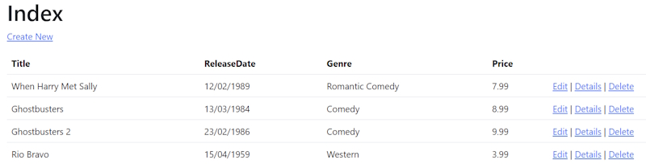

The RazorPagesMovieContext object handles the task of connecting to the database and mapping Movie objects to database records. The database context is registered with the Dependency Injection container in Program.cs:
builder.Services.AddDbContext<RazorPagesMovieContext>(options =>
options.UseSqlServer(builder.Configuration.GetConnectionString("RazorPagesMovieContext") ?? throw new InvalidOperationException("Connection string 'RazorPagesMovieContext' not found.")));
The ASP.NET Core Configuration system reads the ConnectionString key. For local development, configuration gets the connection string from the appsettings.json file.
"ConnectionStrings": {
"RazorPagesMovieContext": "Server=(localdb)\\mssqllocaldb;Database=RazorPagesMovieContext-f2e0482c-952d-4b1c-afe9-a1a3dfe52e55;Trusted_Connection=True;MultipleActiveResultSets=true"
}
Create a new class named SeedData in the Models folder with the following code:
using Microsoft.EntityFrameworkCore;
using RazorPagesMovie.Data;
namespace RazorPagesMovie.Models
{
public class SeedData
{
public static void Initialize(IServiceProvider serviceProvider)
{
using (var context = new RazorPagesMovieContext(
serviceProvider.GetRequiredService<
DbContextOptions<RazorPagesMovieContext>>()))
{
if (context == null || context.Movie == null)
{
throw new ArgumentNullException("Null RazorPagesMovieContext");
}
// Look for any movies.
if (context.Movie.Any())
{
return; // DB has been seeded
}
context.Movie.AddRange(
new Movie
{
Title = "When Harry Met Sally",
ReleaseDate = DateTime.Parse("1989-2-12"),
Genre = "Romantic Comedy",
Price = 7.99M
},
new Movie
{
Title = "Ghostbusters ",
ReleaseDate = DateTime.Parse("1984-3-13"),
Genre = "Comedy",
Price = 8.99M
},
new Movie
{
Title = "Ghostbusters 2",
ReleaseDate = DateTime.Parse("1986-2-23"),
Genre = "Comedy",
Price = 9.99M
},
new Movie
{
Title = "Rio Bravo",
ReleaseDate = DateTime.Parse("1959-4-15"),
Genre = "Western",
Price = 3.99M
}
);
context.SaveChanges();
}
}
}
}
Note: If there are any movies in the database, the seed initializer returns and no movies are added.
if (context.Movie.Any())
{
return;
}
Update the Program.cs code.
var app = builder.Build();
using (var scope = app.Services.CreateScope())
{
var services = scope.ServiceProvider;
SeedData.Initialize(services);
}
In the previous code, Program.cs has been modified to do the following:
Get a database context instance from the dependency injection (DI) container.
Call the seedData.Initialize method, passing to it the database context instance.
Dispose the context when the seed method completes. The using statement ensures the context is disposed.
Delete all the records in the database so the seed method will run. Stop and start the app to seed the database. If the database isn't seeded, put a breakpoint on if (context.Movie.Any()) and step through the code.
The app shows the seeded data.
